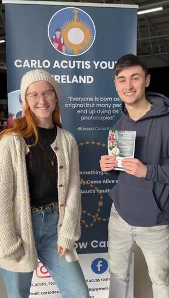

Mary-Aoife and Séamus, in their own words
We are Mary-Aoife and Séamus Ong, brother and sister living in Dublin. In October 2023, after graduating from college, we took a trip to Assisi and discovered Carlo Acutis for the first time.
Up to this point we had always thought saints were from the past, and never imagined it could be possible to be a saint in the ordinary things in life. Carlo changed our minds. We learnt how he was a totally normal boy who liked football, video games and hanging out with his friends — yet when you took a closer look, you noticed he rarely argued with anyone, he was always calm in his judgments, generous and ready to help everyone. His plan was to live a life as close to God as possible, but he was extraordinary in the everyday life of things.
After we discovered Carlo we set off on a mission to tell our friends about him, and it wasn’t long before we were given the task to set up and manage Carlo Acutis Youth Ireland by Brenda Cleary and Archbishop Domenico Sorrentino.
Our plan is to create a presence where we can represent the young people of Ireland, tell them about Carlo Acutis, and help them share Carlo’s story with their friends. It is our dream to one day have lots of little Carlo hubs around Ireland, full of young people sharing his story with others and trying to live a life like he did — through prayer, charity work, fun, and most importantly the Eucharist, which Carlo called his highway to heaven.
Let’s follow Carlo.
Mary-Aoife & Séamus OngDirectors, Carlo Acutis Youth Ireland

Carlo Acutis Youth Ireland